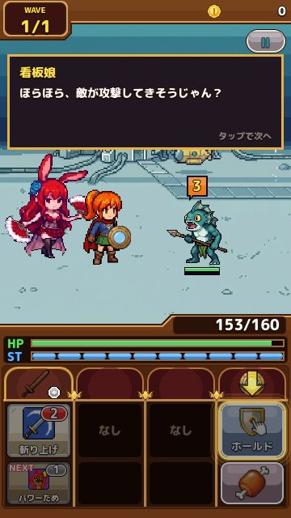
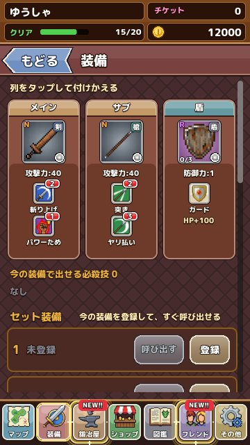

海底編とホールドガード：押して構え、離して受ける
海底の世界の入り方と、押して離す「ホールドガード」の決まり・コツ・特殊攻撃・盾をまとめました。 更新：2026-11-23
海底の世界へ入るには
海底編は、地底の旅を終えたあとに始まる世界です。地底のエンディングを見てからゲームを再開すると、王さまとの話があり、そのあと地上の地図の海に「海の大穴」が開きます。穴をタップして「海底へ」を選ぶと、海の底の拠点「海洋観測所」に着きます。
はじめて海洋観測所に着くと、そのままホールドガードのチュートリアルが始まります。地上の盾を持ったまま海底の敵に襲われ、まったく防げない最初の一撃を受けたところで、案内役が海底用の盾「潜水艇の窓」を投げてくれます。チュートリアルを終えると、最初のエリア「珊瑚の浅瀬」へ進めるようになります。
海底の地図には、地上へもどるための「光る泡」があります。地上の装備を整え直したいときや、地上の素材を集めたいときは、いつでも行き来できます。海洋観測所には盾の店とガチャがあり、チュートリアルは何度でもやり直せます。チュートリアルのあとは、ガードの練習相手「カイテイカカシ」も選べるようになります。

海底では「海底の盾」が必要
キシドラ！の盾には、それぞれ「どの世界の攻撃を防げるか」が決まっています。海底の敵の攻撃を防げるのは、スキルが「ホールドガード」になっている海底の盾だけです。地上の盾や地底の盾のまま海底へ出かけても、出発そのものはできますが、ガードがまったくできません。
さらに、世界に合わない盾は、盾の DEF（ダメージを減らす力）も、盾の HP（主人公の最大 HP に足される分）も、盾の効果も入りません。つまり、地上の強い盾を付けたまま海底へ行くと、ガードできないうえに最大 HP まで下がってしまいます。海底へ行く前は、かならず海底の盾に付けかえましょう。
逆に、海底の盾は地上や地底では使えません。地上・地底・海底を行き来するなら、装備の画面で「地上用」「海底用」のように装備をまとめておくと、付けかえ忘れを防げます。盾の DEF と HP の見方は 盾の選び方 にもまとめています。
ホールドガードの基本：4 つの手順
海底の敵の攻撃は、一瞬で終わる「一撃」ではなく、しばらく押しこんでくる「長い攻撃」です。これを、ガードボタンを押しつづけて受け止め、攻撃が終わる瞬間に指を離して受け流すのがホールドガードです。判定は「押し始め」と「離した時」の 2 か所で行われます。
1. 合図を見る
カウントが 0 になった敵は、頭の上に「!!」を出します。「!!」が出てから攻撃が始まるまでの時間は、地上や地底の「!!」から当たるまでと同じです。「!!」の下に小さな点が並んでいるときは、何回続けて押しこんでくるか（段の数）の印です。色の違う「!!」はボスの必殺技です。
2. 押す
攻撃が始まる時に、ガードボタンを押していなければなりません。海底では、「!!」が出た時からもう押してかまいません。早めに押して待っていても失敗にはならないので、「!!」を見たらすぐ押して構える、と覚えておくと安心です。段の始まりで押せていないと、その段の攻撃はそのまま全部当たります。
3. こらえる
押しているあいだ、敵の絵は小刻みに震え、盾には火花が散ります。指を離してはいけないあいだは、画面の背景が少し暗くなります。暗いうちは指をそのまま置いておく、と覚えてください。
4. 離す
段の終わりが近づくと、敵は一度ぐっと後ろに引き、それから最後に強く押しこんできます。この押しこみきった瞬間が「離す時」です。チュートリアルでも、敵がぐっと引いて押しこんでくる瞬間に離すとミラクル、と教えてくれます。離す時に近いほど、ガード・ジャストガード・ミラクルガードと結果がよくなります。

離すタイミングと結果
離した時が、段の終わりからどれだけ前だったかで結果が決まります。数字は難易度ごとに違い、単位はフレーム（1 秒 = 60 フレーム）です。表の数より前に離すと「途中で離した」扱いになります。
| 難易度 | ミラクル | ジャスト | ガード |
|---|---|---|---|
| イージー | 5 フレーム以内 | 12 フレーム以内 | 35 フレーム以内 |
| ノーマル | 4 フレーム以内 | 10 フレーム以内 | 30 フレーム以内 |
| ハード | 3 フレーム以内 | 8 フレーム以内 | 25 フレーム以内 |
| エクストラ | 2 フレーム以内 | 6 フレーム以内 | 20 フレーム以内 |
| ルナティック | 1 フレーム（ちょうど） | 4 フレーム以内 | 15 フレーム以内 |
ノーマルなら、終わりの 0.5 秒前から離せばガードになり、終わりぎりぎりの約 0.07 秒に離せばミラクルです。地上のガードの受付と同じ数なので、地上で身についた「当たる瞬間」の感覚がそのまま生きます。難易度の全体のちがいは 難易度 5 段階のちがい を見てください。
- 早く離しすぎた：途中で離した扱いです。その段の、残りの長さの割合だけダメージを受けます（半分のところで離せば、だいたい半分）
- 離すのが遅すぎた：攻撃が終わってもまだ押していると、ガード失敗で全部当たります
- 押し始めに間に合わなかった：その段は全部当たります
2 段・3 段と続く攻撃
海底の敵は、ふつうの攻撃でも短い 2 段に分けて押しこんでくることがあります。「!!」の下の点が 2 つなら 2 段です。1 段目が終わったらいつもどおり離し、2 段目の前にもう一度「!!」が出たら、また押して構えます。段はひとつずつ別々に判定されるので、1 段目を失敗しても 2 段目はきちんと受けられます。受けそこねた段の点は灰色になり、そのぶん次の段は少し早めにやってきます。
ボスの必殺技は、色の違う「!!」とともに 2〜4 段で押しこんできます。必殺技の段は長さがまちまちなことが多く、長い段のあとにすぐ短い段が来ることもあります。それでも海底の段は、どれも 1 秒より短くはならないように作られています。あせらず、敵の「引いて押しこむ」動きを 1 段ずつ見て離しましょう。
ボスだけの「はじく段」
エリアのボスの攻撃には、離す時に指をはじく段があります。段が始まると「!!」が「↑↑」「←←」「↓↓」のような矢印に変わるので、いつもどおり押して構え、離す瞬間にその向きへシュッとはじいてください。向きをまちがえると、タイミングが合っていても全部当たります。
- 雑魚と中ボスの攻撃には、はじく段はありません。押して、こらえて、離すだけです
- 矢印の出ない段は、そのまま離せば受けられます。離すときに指が少しずれても失敗にはなりません
- 押しているあいだの指のずれは、はじいたことになりません。はじきとして見るのは、離す直前のほんの少しの動きだけです。こらえている間は指を止め、最後に短く鋭くはじくのがコツです
- ボスのふつうの攻撃は、ボスによって矢印の出やすさが違います。必殺技の段は、どの段も矢印が出やすくなっています
ジャスト・ミラクルのごほうび
ホールドガードのごほうびは、段ごとに入ります。ミラクルで離した段は ST が満タンになり、ジャストで離した段は ST が 2 回復してダメージも大きく減ります。ふつうのガードは、盾の DEF のぶんだけダメージを減らします。
ただし HP の回復だけは、その攻撃の全部の段をミラクルで受けたときに、攻撃の終わりにまとめて入ります。何段もある必殺技で HP を回復するには、全部の段で離す時をぴたりと合わせる必要があります。むずかしいぶん、決まったときの見返りは大きいです。

海底の特殊攻撃
海底の敵の中には、特別な攻撃をしてくるものがいます。雑魚はふつうの攻撃のうちの一部が、ボスは必殺技のたびに特殊攻撃になります。特殊攻撃のときは、攻撃の前に名前の知らせが出ます。
| 名前 | 主に使う敵 | どうなるか | 対策 |
|---|---|---|---|
| 粘着 | クラゲ、イソギンのなかまと、クラゲや渦・深淵の竜のボス | 最後の段を押せると、つかまれたまま自分の番になる。途中で離すとその段が全部当たる | 押したまま攻撃。スタンさせるか倒せば放してくれる |
| 毒棘 | ウミウシ、トゲイソギン、トゲウミヘビ、ドクウツボ、トゲガメなど | ジャストより下で受けた段があると、主人公が 3 ターンの毒 | 全部の段をジャスト以上で離す |
| 擬態 | アンコウ、ヤドカリのなかま | 攻撃のあと姿を消し、次の自分の番はその敵に攻撃が当たらない | その番はほかの敵をねらう |
| 泡鎧 | カニ、術士のなかま | 攻撃のあと泡をまとい、次の 1 発を泡が防ぐ | 槌なら泡ごと割って当たる |
粘着のくわしい流れ
粘着の攻撃は、最後の段の始まりで押せていると、その段が決まらないまま自分の番になります（ボスの必殺技では、最後の段が矢印の出ない段のときだけつかまれます）。このとき、ガードボタンから指を離さずに、もう片方の指でスキルの札を押して攻撃します。途中で指を離すと、その瞬間につかまれていた段が全部当たります。自分の攻撃で敵をスタンさせるか倒せば、敵は放してくれて、その段のダメージはなくなります。
スタンも撃破もできなかったときは、次の敵の番のはじめに、敵がゆっくり離れていきます（約 1.2 秒）。離れる動きの終わりには、ふつうの段と同じように「引いて押しこむ」動きがあるので、そこで離せばガード・ジャスト・ミラクルになります。スマートフォンを両手で持ち、片方の親指でガード、もう片方でスキル、という持ち方が向いています。
毒棘・擬態・泡鎧のポイント
毒棘の毒は、敵の番のはじめに最大 HP の 5% ずつ減っていきます（毒で HP 1 より下にはなりません）。何段もある攻撃のうち 1 段でもふつうのガードになると毒になるので、毒棘の敵の前では「ガードで十分」ではなく「ジャスト以上」をねらいましょう。
擬態した敵は、自分が 1 回行動すると姿を現します。姿が消えている番に攻撃しても空振りになるだけなので、ほかの敵を先に減らしましょう。泡鎧の泡は、剣や槍で攻撃すると最初の 1 発で割れてダメージが入りません。槌の攻撃は泡を割りながらそのまま当たるので、泡鎧の敵には槌が向いています。
よくある失敗と直し方
- 「!!」の前から押しっぱなし：「!!」が出る前から指を置いたままだと、押し始めとして数えられず、段の始まりで全部当たります。いったん離して、「!!」が出てから押し直せば間に合います
- 攻撃が来る前に押して、すぐ離した：段が始まる前に離した指は「なかったこと」になります。失敗にはならないので、落ち着いて押し直してください
- 早く離してしまう：段の長さを「時間」で数えるとずれやすくなります。敵が後ろに引く動きが見えるまでは離さない、と決めておくと安定します
- 押しっぱなしで終わってしまう：押しこみきった瞬間を見のがすと、そのまま全部当たります。押しこみは段の最後のほんの一瞬なので、引く動きが見えたら「次で離す」と身構えましょう
- 2 段目の押し忘れ：1 段目を離したあと、もう一度「!!」が出たらすぐ押します。点の数を見て、何段あるかを先に確かめておくと忘れにくくなります
- はじく向きのまちがい：矢印は段が始まってから出ます。押しながら矢印を読み、離す瞬間だけ指を動かします
- 粘着で指を離してしまう：スキルの札はもう片方の指で押します。ガードの指は、敵が離れて押しこんでくるまで動かしません
練習のしかた
いちばんのおすすめは、海洋観測所のチュートリアルをもう一度遊ぶことです。チュートリアルは次の 5 つの練習でできていて、どれもガードできるまでやり直せます（7 回でできなくても次へ進みます）。
- 1 段の攻撃：押して、こらえて、離すだけの基本
- 2 段の攻撃：点の数を見て、1 段目を離してから 2 段目を押し直す
- 色の違う「!!」の必殺技：何段も続けて押しこんでくる攻撃
- はじく段：「!!」が矢印に変わり、離す時にその向きへはじく
- 粘着：押したまま攻撃し、敵が離れる終わりで離す
チュートリアルのあとに選べる「カイテイカカシ（ガードの練習）」は、毎ターン攻撃してくる練習相手です。主人公は倒れず、ごほうびもない代わりに、自分の装備のまま何度でも離すタイミングを試せます。新しい盾の感触を確かめたいときにも便利です。
それでもタイミングが合わないと感じるときは、「設定」のガードの補正を見直してください。ブラウザや機種によって、画面に触れてから反応するまでの時間がわずかに違います。離す時がいつも早すぎるなら遅めに、遅すぎるなら早めに合わせます。どうしても苦しいボスでは、難易度をイージーにすると受付が広がります。

海底の盾
海底の盾は、海洋観測所・人魚の入り江・夜光の洞窟の店で買えるほか、敵が落とす宝箱やガチャでも手に入ります。店で買える盾は次のとおりです。
| 盾 | 店 | レア度 | DEF | HP | 効果 |
|---|---|---|---|---|---|
| 貝殻の盾 | 海洋観測所 | N | 2 | 70 | なし |
| 浮き輪の盾 | 海洋観測所 | N | 1 | 80 | なし |
| 珊瑚の盾 | 人魚の入り江 | R | 3 | 120 | ねばり：途中で離したときのダメージ −30% |
| 亀の甲羅盾 | 人魚の入り江 | R | 3 | 130 | 圧力隔壁：受けるダメージ −10% |
| ヒトデの盾 | 人魚の入り江 | R | 4 | 110 | 潮読み：離すときのはじく向きの判定が広い |
| 舵輪の盾 | 人魚の入り江 | R | 3 | 140 | 錨の構え |
| 人魚の鱗盾 | 夜光の洞窟 | SR | 5 | 180 | 潮の加護：ミラクルで回復する HP 120% |
| 真珠貝の盾 | 夜光の洞窟 | SR | 5 | 190 | 泡の守り：ジャスト以上で離すと、次の 1 発のダメージ −30% |
| 船のハッチ盾 | 夜光の洞窟 | SR | 5 | 200 | 水密 |
| マンタの盾 | 夜光の洞窟 | SR | 4 | 190 | 先読み：合図が早く出て、読む時間がのびる |
どの効果を選ぶか
- まだ離すタイミングが安定しない：ねばり（珊瑚の盾）。早く離してしまったときの被害を減らしてくれます。上のレア度には −50% の「ねばり・極」もあります
- ボスのはじく段が苦手：潮読み（ヒトデの盾）。ななめにはじいてしまっても、矢印の向きとして受け付けてもらいやすくなります
- ジャストは出せる：泡の守り（真珠貝の盾）。ジャスト以上で離すたびに次の 1 発が軽くなり、何段も続く必殺技で効いてきます
- ミラクルを決められる：潮の加護（人魚の鱗盾）。全部の段をミラクルで受けたときの回復がふえます
- とにかく安定させたい：圧力隔壁（亀の甲羅盾）。いつでも受けるダメージが減ります
錨の構えと水密は、それぞれ特定の特殊攻撃（酩酊・泡沫）に向けた効果で、今の海底のエリアの敵はその攻撃を使いません。この 2 つの盾は、効果よりも DEF と HP を見て選ぶとよいでしょう。
海底の盾も、鍛冶屋で強化・進化できます。海底の素材は、雑魚とボスが落とす「泡のかけら」と、ボスが落とす「深海石」が基本です。進化のしかたは 鍛冶屋の使い方 を見てください。

海底のエリアの攻略
海底の各エリアの敵、中ボスとボスの弱点、初回クリアの品は、次の 2 つの記事にまとめています。